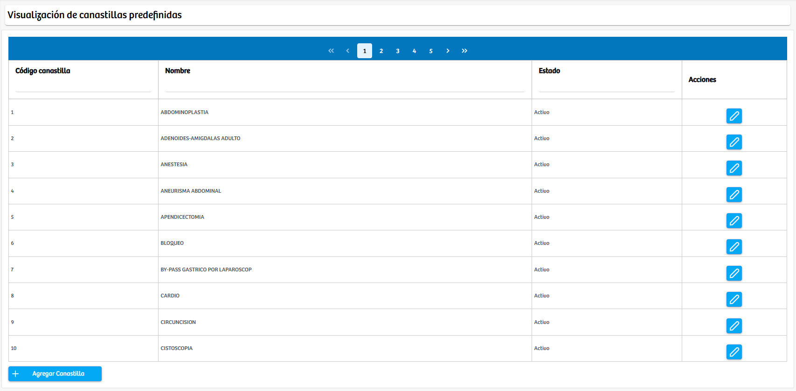
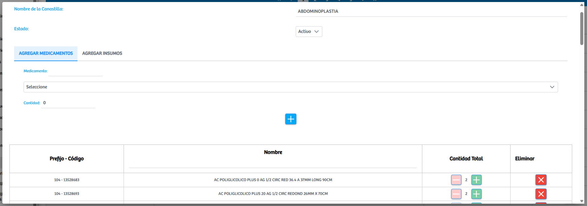

Modulos Sas-Web
Funcionalidades
Canastillas
El módulo Canastillas, perteneciente al área de Farmacia, permite consultar, administrar y estructurar las canastillas predefinidas utilizadas en procedimientos clínicos y quirúrgicos. En la vista principal se muestran todas las canastillas registradas en el sistema, junto con su código, nombre y estado, ofreciendo una visión organizada del catálogo disponible.
Cada canastilla puede ser editada mediante el botón correspondiente, lo que abre un modal de gestión donde el usuario puede agregar nuevos medicamentos o insumos a la canastilla, así como visualizar, modificar las cantidades o eliminar los elementos ya existentes. Esta funcionalidad facilita la construcción y mantenimiento de las canastillas, asegurando que su contenido esté actualizado y ajustado a los requerimientos de cada procedimiento. En conjunto, el módulo proporciona una herramienta centralizada para la administración eficiente de los insumos que componen cada canastilla, optimizando tanto la preparación logística como el control del consumo en farmacia.
